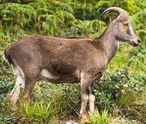

தமிழ்நாடு மாவட்டங்கள்
TAMILNADU DISTRICTS
VANNKKAM TAMIZHA !!!!
The state emblem was designed in 1949 by artist R. Krishna Rao who was a native of Madurai. Krishna Rao was honoured with awards and titles for his contribution to the state. A student of the Government College of Fine Arts and Crafts in Chennai, who went on to become the principal of the college later, Rao was approached to design the emblem in 1948 when he was a professor of applied arts in the college. It consists of the Lion Capital of Ashoka without the bell lotus foundation and flanked on either side by an Indian flag. Behind the capital, is the image of a Gopuram or Hindu temple tower based on the Srivalliputhur Temple. Around the rim of the seal runs an inscription in Tamil script, one at the top தமிழ் நாடு அரசு ("Tamil Nadu Arasu" which translates to "Government of Tamil Nadu") and the other at the bottom வாய்மையே வெல்லும் ("Vaymaiye Vellum" which translates to "Truth Alone Triumphs" also commonly known as "Satyameva Jayate" in Sanskrit). It is the only state emblem that has the Indian Flag and Hindu temple tower on its seal.
Nilgiri Varaiyaadu is an ungulate that is endemic to the Nilgiri Hills and the southern portion of the Western and Eastern Ghats in the states of Tamil Nadu. It is the only species in the genus Nilgiritragus and is closely related to the sheep of the genus Ovis.
The Nilgiri Tahr is facing various threats due to habitat loss, poaching, and climate change. The animal’s habitat is under threat due to deforestation and encroachment by human settlements. Poaching for their meat and horns is also a significant threat to the animal’s survival. The changing climate is also affecting the animal’s habitat and food sources, leading to a decline in their population.
- Scientific name – Borassus flabellifer
- Common names – Doub palm, tala or tala palm, Palmyra palm, wine palm or ice apple, toddy palm
- Native – South Asia, Southeast Asia, Socotra, and parts of China
- Native names – Katpaha Tharu (celestial tree), Panaiveriyamman
- Symbolise – Fertility according to the Tamil deity
The forest area in Theni district is about 33.70%. There are 27 forest areas in the district, constituting a total area of 795.81 km2 (307.26 sq mi). Of these, 19 areas fall under the Reserve Forest category with 255.44 km2 (98.63 sq mi) and 8 areas under Reserve Land category with 540.37 km2 (208.64 sq mi). Total area of forest under green cover classification was 806.86 km2 (311.53 sq mi). Dense forest and sparse forest are 292.81 km2 (113.05 sq mi) and 22.43 km2 (8.66 sq mi), respectively. There is no unclassed forest type in the district. About 44.65 km2 (17.24 sq mi) of artificial forest area are cultivated in the district. Wattle, softwood, fuel wood, cashew, neem, and tamarind are the main forest plantation species in the district.[6] The forest area in the district is 1,179.29 km2 (455.33 sq mi), which is 40.98% of the total geographical area of the district.[16] The Meghamalai Wildlife sanctuary, Srivilliputhur elephant reserve, and part of Kodaikanal Wildlife Sanctuary are situated in Theni district.